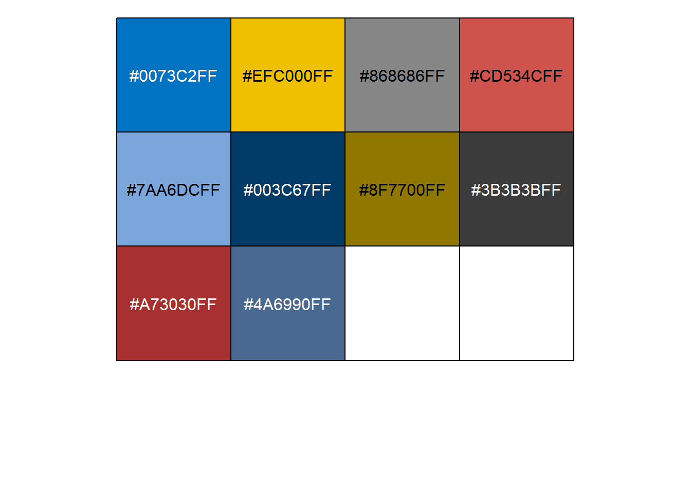
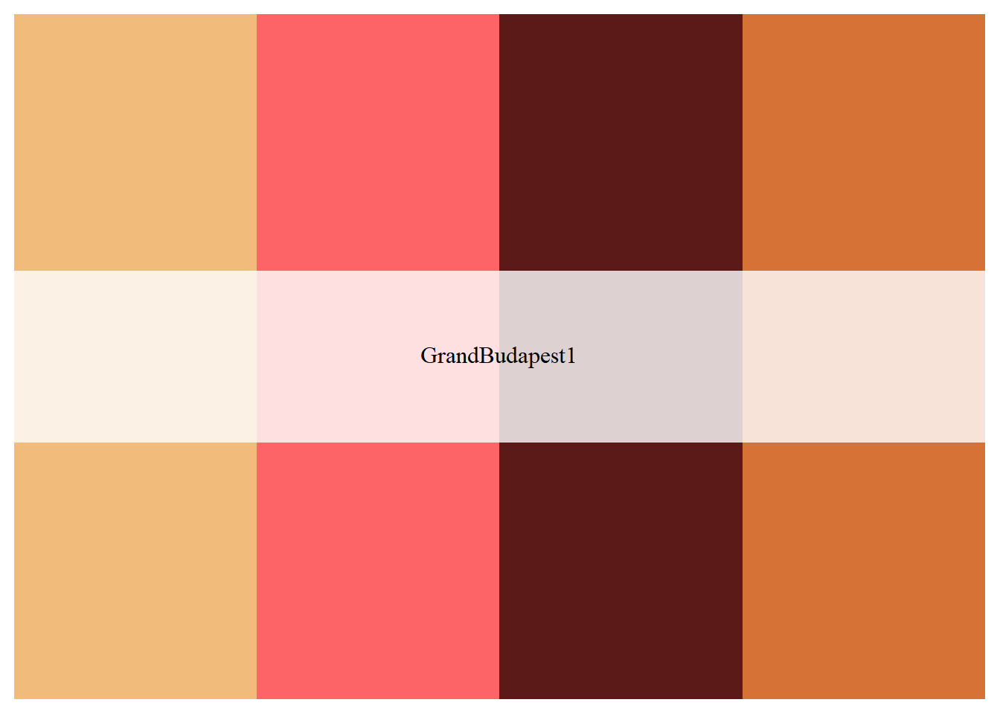

Se ha visto 8 tipos:
OBS:
Son colores ya existentes en R y para utilizarlos, solo debemos escribir su nombre.
library(scales)
colors() %>%
head(21)## [1] "white" "aliceblue" "antiquewhite" "antiquewhite1"
## [5] "antiquewhite2" "antiquewhite3" "antiquewhite4" "aquamarine"
## [9] "aquamarine1" "aquamarine2" "aquamarine3" "aquamarine4"
## [13] "azure" "azure1" "azure2" "azure3"
## [17] "azure4" "beige" "bisque" "bisque1"
## [21] "bisque2"show_col(c("aquamarine", "red", "beige"))
Son aquellos códigos que empiezan con # (Ex.
“#ffb90f”)
Se encuentra disponibles en diversas páginas de google, como: https://www.color-hex.com/
Lista1 <- c("#ffb90f", "#0DBBBF", "#ea847b")
show_col(Lista1)
Son combinaciones de colores ya agrupadas y listas para
utilizar.
La libreria a usar: library(RColorBrewer)
Más información en:
Para mostrar todos los colores disponibles:
library(RColorBrewer)
brewer.pal.info## maxcolors category colorblind
## BrBG 11 div TRUE
## PiYG 11 div TRUE
## PRGn 11 div TRUE
## PuOr 11 div TRUE
## RdBu 11 div TRUE
## RdGy 11 div FALSE
## RdYlBu 11 div TRUE
## RdYlGn 11 div FALSE
## Spectral 11 div FALSE
## Accent 8 qual FALSE
## Dark2 8 qual TRUE
## Paired 12 qual TRUE
## Pastel1 9 qual FALSE
## Pastel2 8 qual FALSE
## Set1 9 qual FALSE
## Set2 8 qual TRUE
## Set3 12 qual FALSE
## Blues 9 seq TRUE
## BuGn 9 seq TRUE
## BuPu 9 seq TRUE
## GnBu 9 seq TRUE
## Greens 9 seq TRUE
## Greys 9 seq TRUE
## Oranges 9 seq TRUE
## OrRd 9 seq TRUE
## PuBu 9 seq TRUE
## PuBuGn 9 seq TRUE
## PuRd 9 seq TRUE
## Purples 9 seq TRUE
## RdPu 9 seq TRUE
## Reds 9 seq TRUE
## YlGn 9 seq TRUE
## YlGnBu 9 seq TRUE
## YlOrBr 9 seq TRUE
## YlOrRd 9 seq TRUEPara selecionar uno en particular: (Nos devuelve códigos
Hexadecimales)
brewer.pal(n = 3, name = "Dark2")## [1] "#1B9E77" "#D95F02" "#7570B3"Para visualizar los colores:
show_col(brewer.pal(n = 3, name = "Dark2"))
Utiliza la libreria library(viridis).
Dentro de la libreria, hay 4 paletas:
Nos devuelve códigos Hexadecimales.
Más información:
Para escoger una paleta en particular y la cantidad de colores que
queremos:
library(viridis)
viridis(10, option = "mako")## [1] "#0B0405FF" "#28192FFF" "#3B2F5EFF" "#40498EFF" "#366A9FFF" "#348AA6FF"
## [7] "#38AAACFF" "#54C9ADFF" "#A0DFB9FF" "#DEF5E5FF"O también lo podemos llamar por letra de alfabeto
correspondiente:
viridis(10, option = "G")## [1] "#0B0405FF" "#28192FFF" "#3B2F5EFF" "#40498EFF" "#366A9FFF" "#348AA6FF"
## [7] "#38AAACFF" "#54C9ADFF" "#A0DFB9FF" "#DEF5E5FF"show_col(viridis(10, option = "G"))
Utiliza la libreria library(ggsci) y la función
pal_jco().
Hace referencia a: Journal of Clinical Oncology Color Palettes.
Solo tiene una paleta de color disponible: default
Solo tiene 10 colores disponibles
library(ggsci)
pal_jco(palette = c("default"))(10)## [1] "#0073C2FF" "#EFC000FF" "#868686FF" "#CD534CFF" "#7AA6DCFF" "#003C67FF"
## [7] "#8F7700FF" "#3B3B3BFF" "#A73030FF" "#4A6990FF"show_col(pal_jco(palette = c("default"))(10))
show_col(pal_jco(palette = c("default"))(30))
Utiliza la libreria library(wesanderson)
Obtener los nombres de las paletas: names().
Se tiene que revisar la cantidad de colores, por cada paleta, ya que
difieren.
Si queremos utilizar más del límite, debemos utilizar la opción:
type = c(“continuous)
Más información:
library(wesanderson)
names(wes_palettes)## [1] "BottleRocket1" "BottleRocket2" "Rushmore1" "Rushmore"
## [5] "Royal1" "Royal2" "Zissou1" "Darjeeling1"
## [9] "Darjeeling2" "Chevalier1" "FantasticFox1" "Moonrise1"
## [13] "Moonrise2" "Moonrise3" "Cavalcanti1" "GrandBudapest1"
## [17] "GrandBudapest2" "IsleofDogs1" "IsleofDogs2"Seleccionando una paleta en general:
wes_palette("GrandBudapest1", n = 4)
wes_palette("GrandBudapest1", n = 10, type = c("continuous"))
Paleta de colores disponibles en R (R base color
palettes).
Solo tiene disponible 5 paletas:
Cada paleta solo tiene 5 colores disponibles.
Más información:
rainbow(5)## [1] "#FF0000" "#CCFF00" "#00FF66" "#0066FF" "#CC00FF"heat.colors(5)## [1] "#FF0000" "#FF5500" "#FFAA00" "#FFFF00" "#FFFF80"Visualizando los colores
show_col(rainbow(5))show_col(heat.colors(5))